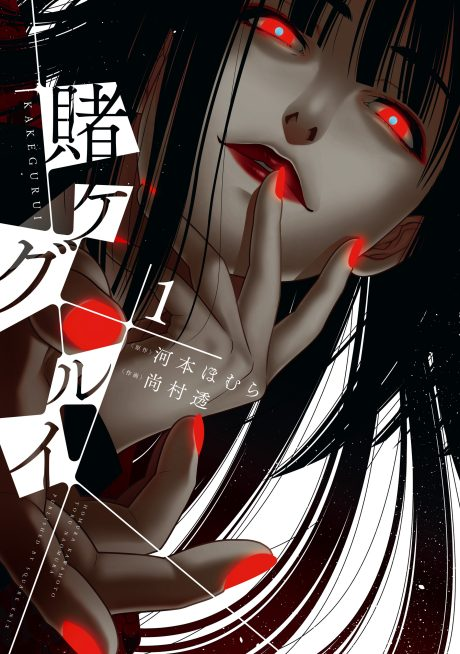

Anime
Anime
Manga2017 · Drama, Mystery, Psychological
Kakegurui
賭ケグルイ
AniList7.0
Animeter—
2 seasons24 ep
MangaCh. 56
Is it worth pushing through?
Built from what visitors report across all 2 seasons (24 episodes).
Loading reports…Checking what other people said about this one.
Sign in with your email at the top of the page to add your report.